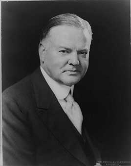

A mining engineer famous for organizing food relief in World War I. The stock market crashed seven months into his term. He signed the Smoot–Hawley tariff, created the Reconstruction Finance Corporation to lend to banks and businesses, and raised taxes sharply in 1932. Unemployment rose from about 3% to nearly 25%, and he lost to Franklin Roosevelt in a landslide.
Shaded areas show the years in office, with a few years before and after for comparison. Budget years ran July to June until 1976 (now October to September), so each year's figures cover parts of two calendar years.
June 30, 1928 (end of fiscal 1928): $17.60 billion → June 30, 1932 (end of fiscal 1932): $19.49 billion
Daily debt figures don't exist before 1993, so Hoover's numbers use the fiscal years closest to his term, the same rule as every other page. By June 30, 1933, after fiscal 1933 (mostly his budget year), the debt was $22.5 billion.
Debt as a share of GDP. Above 100% means the debt is bigger than a year of everything the country produces.
Money borrowed each budget year (below the line) or paid down (above).
1929: 3.2% → 1932: 23.6%. Yearly averages; monthly figures begin in 1948. Estimates from the Census Bureau's Historical Statistics (Lebergott series).
How much prices rose each year (consumer price index).
What everyday prices and paychecks did while in office.
Prices use the consumer price index (MeasuringWorth). The minimum wage is the federal rate set by Congress.
995 orders, numbered 5076–6070. The American Presidency Project counts 1,003, including lettered orders. Many were routine, such as setting aside public land.
Source: Wikipedia: list of Hoover's executive actions (full list of every order).
Merged the agencies serving veterans into one Veterans Administration, the forerunner of today's VA.
Federal RegisterA pardon wipes out the punishment for a federal crime; a commutation shortens a sentence but leaves the conviction. Counts are by federal fiscal year (July to June). The Justice Department counts fiscal 1929, including Hoover's first four months, under Coolidge, and all of fiscal 1933, including Roosevelt's first four months, under Hoover.
Source: U.S. Dept. of Justice, clemency statistics, which lists every recipient with the crime and sentence.
The crime: Mail fraud involving his failing cattle business (convicted 1924)
Sentence: Ten years; paroled after about three
Why it drew attention: A former Republican governor of Indiana who resigned when convicted.
SourceThe same checklist for every president. Tap a row for details and sources.
Rep. Louis McFadden, a fellow Republican, introduced impeachment resolutions in 1932 and 1933; the House tabled the first one, 361–8.
SourceNever charged.
No member of his cabinet or White House staff was convicted.
None were appointed.
No congressional or official investigation found he used these agencies against opponents.
What happened, what was proven, and how it ended.
Thousands of World War I veterans camped in Washington to demand early payment of a promised bonus. After police killed two veterans, Hoover ordered the Army to clear the area; troops under MacArthur used tanks, cavalry and tear gas and burned the camp.
Outcome: No one was charged; the scene hurt Hoover badly in the 1932 election.
SourceMore than 1,000 economists urged him to veto the tariff increases; he signed them, and trading partners retaliated.
Outcome: World trade fell sharply; how much the tariff deepened the Depression is debated.
SourceLabor Department raids and local pressure drove hundreds of thousands of Mexicans and Mexican Americans, many of them U.S. citizens, to leave the country. The effort continued after Hoover left office.
Outcome: California formally apologized in 2005.
SourceThe Revenue Act of 1932 raised the top income tax rate from 25% to 63% to close the deficit.
Outcome: Supporters called it responsible; many economists say it made the downturn worse.
SourceWidely quoted remarks, with the context they were said in.
We in America today are nearer to the final triumph over poverty than ever before in the history of any land.
Economic depression cannot be cured by legislative action or executive pronouncement.
The grass will grow in the streets of a hundred cities, a thousand towns.